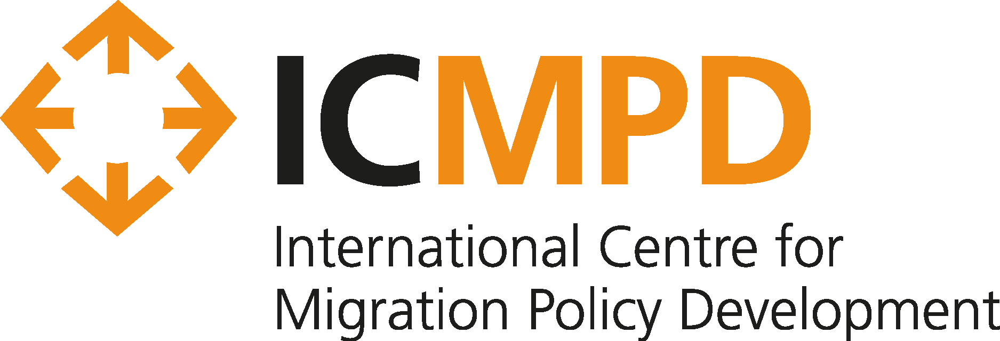

Cintya Huaire
Data & Policy Analyst | Policy SpecialistDigital Innovation for Migration & Social Protection
About Me
Driven by a deep commitment to inclusive development, I combine expertise in economics, public policy, and data analytics to design scalable solutions. With 6+ years of experience across UNICEF, ILO, ICMPD, and the Peruvian government, I bridge complex data analysis with actionable policies in social protection, migration, gender, and digital transformation.
Professional Experience
- Junior Project Officer, Modernisation and Digital Innovation, ICMPDSep 2024 – Present | Valletta, Malta
- Research and Evaluation Trainee, FUNDAMENTALS, International Labour Organization (ILO)Feb 2024 – Aug 2024 | Geneva, Switzerland
- Social Policy Intern, UNICEF Latin America and the CaribbeanOct 2022 – Jul 2023 | Panama City, Panama (Remote)
- Public Policy Consultant, Ministry of Housing, Construction and Sanitation, PeruJan 2021 – Jul 2021 | Lima, Peru
- Economic Consultant, Ministry of Economy and Finance, PeruFeb 2020 – Dec 2020 | Lima, Peru
- Economic Consultant, Ministry of Education, PeruFeb 2018 – Jan 2020 | Lima, Peru
Other Relevant Experience
- Junior Analyst, Metis Gaia S.ACMay 2017 – Dec 2017 | Lima, Peru
- Consultant, Indecopi (National Institute for the Defense of Competition and Protection of Intellectual Property)2020 | Lima, Peru
- Intern, Investor Relations, Camposol2016 | Lima, Peru
- Intern, Economic Studies Office, Ministry of Foreign Trade and Tourism (MINCETUR)2015 | Lima, Peru
Skills & Languages
Technical Skills
Soft Skills
Languages
Education
- Master of Public PolicyHertie School | 2021 – 2023
- BA in EconomicsUniversidad del Pacifico | 2012 – 2016
Publications

This research explores how artificial intelligence and digital transformation impact indigenous communities, examining both opportunities for development and risks to cultural preservation. The study provides recommendations for inclusive digital policies.

A comprehensive analysis of the transition to green jobs and sustainable economies, focusing on rights-based approaches. This section examines policy frameworks needed to ensure environmental sustainability while protecting worker rights and social equity.
Master's thesis examining the correlation between women's political representation and the development of progressive care policies across Latin America and the Caribbean. The research analyzes policy outcomes in countries with varying levels of female political participation.
This paper presents innovative analytical tools for studying territorial occupation patterns in Peru, combining GIS technology with demographic data. The methodology provides insights for urban planning and infrastructure development in populated centers.
Government report analyzing gaps and relevance in rural population centers across Peru. The study identifies infrastructure needs and development priorities for 94,922 populated centers, informing national housing and development policies.